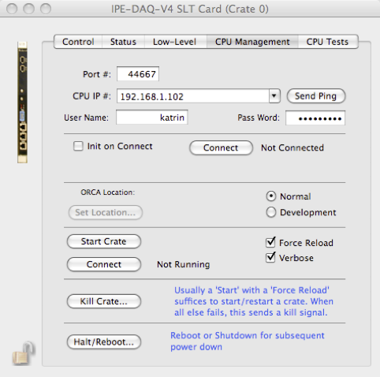

Katrin V4 SLT


Still Under Development!
KATRIN V4 SLT:
The SLT card is the central controller card and provides the connection to the SBC (PrPMC).
In this section you define the IP adress and account information of the SBC/PrPMC.